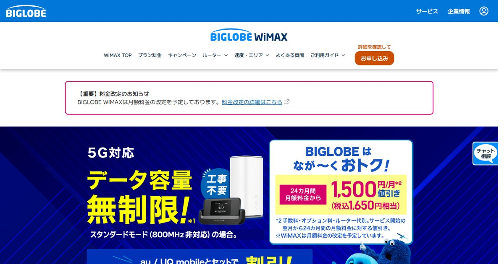

「ホームルーターは工事がいらないから、引越しはコンセントに挿し替えるだけ」。この理解でトラブルになる人が、毎年の引越しシーズンに一定数出ます。工事がいらないのは事実ですが、手続きがいらないとは限らないからです。
しかも厄介なことに、ルールはサービスごとにまったく違います。同じ「置くだけのWi-Fi」でも、ドコモ home 5G と SoftBank Air は登録した住所でしか使えない契約になっていて、無断で別の場所に持ち込むと利用停止の対象になります。一方でWiMAXのホームルーターは、契約住所以外での利用が公式に認められています。
この記事では、3社のルール差・手続きの具体的な手順・引越しタイムライン・そして「引越し先で電波が悪かったとき」の出口までを、順番に整理します。
引越しでやることは①エリア判定 ②住所変更の手続き ③新居での実測確認の3つだけ。ただし②の重みが全然違います。home 5G と SoftBank Air は「設置場所住所の変更」が必須で、やらずに移すと使えなくなる/利用停止の対象。WiMAX系(BIGLOBE WiMAX・とくとくBBホームWi-Fiなど)は契約住所以外での利用が認められており、届け出は契約者情報の更新という位置づけです。引越しが多い人ほどWiMAX系が身軽、と覚えてください。窓口ごとの実質月額の違いはWiMAXプロバイダの比較で確認できます。
引越しの多い人向け:BIGLOBE WiMAXの条件を見る公式サイトへ →PR・申し込み前に月額割引の条件と端末代を確認できます


3社で全然違う「住所変更ルール」早見表
まずここだけ押さえれば、8割は片付きます。ホームルーターの引越しルールは、「登録住所の外で使っていいかどうか」で2つに割れます。2026年9月時点の各社公式の記載をもとに整理しました。
| サービス | 登録住所の外で使える? | 引越し時の手続き | 手続きを怠ると |
|---|---|---|---|
| ドコモ home 5G | 不可(設置場所住所の登録が必須) | My docomo等で設置場所住所の変更。旧住所で電源を切り、新居で変更手続き後に電源を入れる流れ | 設置場所と使用場所が違うと使用できない。登録住所以外での利用が確認されると利用停止の措置 |
| SoftBank Air | 不可(設置場所住所の登録が必須) | My SoftBank等で設置場所住所の変更。送付物の受取先住所も別途変更が必要 | 設置場所住所を変更しないと利用できなくなる。出張・旅行など一時的な場所への変更は不可 |
| WiMAX系(BIGLOBE・GMOなど) | 可(契約住所以外での利用が認められている) | 契約プロバイダの会員ページで契約者住所(請求先)の変更。設置場所の登録という概念がない | 請求書・重要なお知らせが届かなくなる。利用そのものは継続できる |
※ 2026年9月時点の各社公式サイト・FAQの記載にもとづく整理です。規約は改定されることがあるため、手続き前に必ず契約中のサービスの公式ページで最新の条件をご確認ください。
- home 5G と SoftBank Air の手続きは「必須の届け出」。やらないと止まる/止められる
- WiMAX系の手続きは「連絡先の更新」。やらなくても通信は止まらないが、郵送物が旧住所に行く
- どちらもエリア確認は等しく必須。手続きが通っても、電波が届かなければ意味がない

なぜホームルーターに住所の縛りがあるのか
「同じモバイル回線なのに、なぜスマホは自由でホームルーターは住所固定なのか」。ここを理解しておくと、手続きを面倒に感じにくくなります。
ホームルーターは「その1軒で使う想定の帯域を、固定回線の代わりとして割り当てる」前提の商品です。基地局ごとに収容できるユーザー数には上限があるため、事業者は「どの住所に何台あるか」を把握して設計しています。だから申込時にエリア判定をして、「この住所なら受け入れられます」と承諾する仕組みになっている。登録した住所の外に持ち出されると、その設計が崩れます。
一方でWiMAXは、もともとモバイル通信としての色が濃く、持ち運びを前提に設計されてきた歴史があります。ホームルーター型の端末(Speed Wi-Fi HOMEシリーズなど)でも、契約住所以外での利用に規約上の制限を置いていないのはこの流れです。「実家に持っていって年末年始だけ使う」「引越し前に新居で先に試す」といった使い方ができるのは、WiMAX系だけの特徴といえます。
ホームルーターがどの基地局に接続しているかは、事業者側から見えています。登録住所と明らかに離れた場所での接続が続けば検知されうる、というのが前提です。ドコモは設置場所以外での利用を繰り返した場合について、利用停止からさらに踏み込んだ措置にも言及しています。数百円の手間を惜しんで回線ごと失うのは、計算が合いません。
サービス別・住所変更の手続き手順
実際の手順を、サービスごとに分けて書きます。いずれもオンラインで完結できるのが基本です。
ドコモ home 5G:電源を切ってから移動、新居で変更
home 5G の手続きで独特なのは、「端末の電源を切るタイミング」まで手順に含まれている点です。公式が案内している流れは次のとおりです。
-
旧住所で端末の電源を切る
HR01/HR02などの本体の電源をオフにします。ここを飛ばして電源が入ったまま移動すると、登録外の場所での接続として扱われる可能性があります。
-
端末を新居へ運ぶ
ホームルーター本体とACアダプタだけでOK。光回線と違って回収・撤去の立ち会いは不要です。
-
新居で My docomo から設置場所住所を変更する
オンラインのほか、電話(ドコモ インフォメーションセンター)や店頭でも手続きできます。スマホ回線が別会社でも、home 5G の契約に紐づくdアカウントでログインします。
-
手続き完了後に電源を入れる
この順番が公式の案内です。変更完了前に通電させないのがポイント。
SoftBank Air:住所変更は2種類あると考える
SoftBank Air でよくある取りこぼしが、「設置場所住所」と「送付物の受取先住所」が別扱いだという点です。設置場所だけ変えても、請求書や重要書類は旧住所に送られ続けます。両方を変更してください。
- 申込先は My SoftBank、ソフトバンクショップ、ワイモバイルショップ
- 設置場所住所を変更しないと利用できなくなるため、引越し前後で必ず実施
- 住所変更は月1回までという制限がある。短期間に2回引越す予定がある人は要注意
- 出張・旅行など一時的な場所への変更は受け付けられない
- 引越し先がエリア外の場合、そもそも手続きができない
- 料金の未払いがあると手続きできない
「月1回まで」という制限は、意外と刺さる人がいます。実家に一時的に身を寄せてから新居に移るような二段階の引越しだと、2回目の変更が翌月まで待たされる可能性があるということです。この場合は、つなぎ期間の回線を別に用意する前提で考えたほうが安全です。

WiMAX系:会員ページで契約者情報を更新するだけ
BIGLOBE WiMAX、GMOとくとくBB、UQ WiMAXなどのWiMAX系は、プロバイダの会員ページから契約者住所を更新するのが手続きの中身です。UQ WiMAXなら「my UQ WiMAX」の契約者情報照会/変更画面から行えます。
この手続きは「設置場所の申請」ではなく「連絡先の更新」なので、忘れても通信は止まりません。ただし請求書・契約更新の案内・キャンペーンの適用通知といった重要な郵送物が旧住所に届き続けるので、結果的に損をします。引越し当日にやる必要はありませんが、転居届と同じタイミングで片付けてしまうのがおすすめです。
引越し1ヶ月前〜引越し後1週間のタイムライン
手続き自体は10分で終わります。問題は「いつやるか」。光回線と違って工事待ちがない分、ホームルーターの引越しはギリギリまで後回しにされがちです。ここで詰まるポイントを時系列に並べました。
- 1ヶ月前(物件が決まったら) 新居の住所でエリア判定をする これが最優先。番地・建物名・部屋番号まで入れて、契約中のサービスの公式エリア判定にかけます。「〇」ではなく「△(判定中・要確認)」が出たら、後述のリカバリーを前提に動いたほうが安全です。home 5Gのエリア確認方法とWiMAXのピンポイント判定にそれぞれ手順をまとめています。
- 2〜3週間前 エリアが怪しい場合の代替案を決めておく 新居が光回線の工事可能な物件かを管理会社に確認しておくと、最悪のケースでも動けます。賃貸で工事の可否が不明なら賃貸で光回線を引くときの確認事項を先に読んでおくと、問い合わせが1往復で済みます。
- 1週間前 端末残債と契約更新月を確認する 「引越しを機に乗り換える」選択肢を残すなら、この数字が判断材料になります。分割払いの残り回数と、違約金が発生する月かどうかをマイページで確認しておきましょう。
- 引越し当日(移動前) home 5G は電源を切ってから運ぶ 公式の手順どおり、旧住所で電源オフ。SoftBank Air も通電したまま新居で使い始めないよう、荷造り時にコンセントを抜いておきます。
- 引越し当日(新居到着後) 住所変更手続き → 電源オン → 実測 手続きが反映されてから電源を入れ、その場で速度を測ります。スマホのテザリングを保険に用意しておくと、手続きサイトにアクセスできない事態を避けられます。
- 引越し後3日以内 時間帯を変えて3回以上、実測する ホームルーターは同じ部屋でも時間帯で大きくぶれます。平日の昼・平日の夜21時前後・休日の夜、の3点は最低限。1回だけ測って「速い/遅い」を判断しないでください。
- 引越し後1週間 置き場所を2〜3パターン試す 窓際・部屋の中央・床から1m上。ホームルーターは設置場所で実測が倍近く変わることがあります。「遅い」と判断して解約する前に、必ずこの検証を挟みます。
引越しでやりがちな失敗5つ
相談を受けてきた中で、繰り返し出てくるパターンを5つに絞りました。
失敗1:エリア判定を「市区町村まで」で済ませる
5Gや4Gの電波は、同じ町内でも建物の向き・階数・周囲の建物で大きく変わります。特にホームルーターは基地局との間に建物があるかどうかで実測が半分以下になることがあり、「市内はエリア内だから大丈夫」は根拠になりません。番地・建物名まで入れた判定を必ずやってください。
失敗2:引越し先が高層階だから有利だと思い込む
直感に反しますが、高層階が必ず有利とは限りません。携帯基地局のアンテナは地上を向いて設計されていることが多く、高層階では複数の基地局の電波が混ざって不安定になるケースが報告されています。低層階も高層階も「実際に置いて測るまでわからない」が正解です。
失敗3:SoftBank Air の「送付物の受取先住所」を変え忘れる
前述のとおり、設置場所住所とは別扱いです。請求書や契約内容の変更通知が旧住所に届き続け、キャンペーンの適用条件に関わる書類を見落とす原因になります。
失敗4:旧居で解約してから新居の回線を手配する
光回線でも同じですが、順番が逆です。ホームルーターは工事がない分「解約→新規」のほうが特典を取れそうに見えますが、端末の返却や残債の精算が絡むと、空白期間とコストの両方を背負うことになります。乗り換えるなら「新しい回線が新居で使えることを確認してから、旧回線を解約」の順を守ります。
失敗5:引越し当日のネット環境を用意していない
手続きサイトにアクセスするにも、ネットが要ります。新居に着いてから「Wi-Fiが繋がらないので住所変更ができない」という堂々巡りは、実際によくあります。スマホのテザリングで足りますが、データ残量が心もとないなら短期レンタルのポケット型WiFiを数日だけ借りる手もあります。
新居で電波が悪かったときのリカバリー判定
ここがこの記事でいちばん書きたかったところです。引越しで一定数発生するのが「手続きは通ったのに、新居では明らかに遅い」という事態。ホームルーターの引越しは、実質的にその回線の"実力テストを1回やり直す"ことと同じだからです。
そして残酷なことに、初期契約解除(8日以内のキャンセル)は使えません。あれは新規契約時の制度であって、引越しは契約の継続だからです。つまり、新居で遅いとわかった時点で、選べるのは「粘る」か「費用を払って抜ける」かの2択になります。
- ①置き場所を3パターン試したか → 未実施なら、まずこれ。窓際・中央・高さ1mで各1日
- ②時間帯を分けて3回以上測ったか → 夜だけ遅いなら混雑の問題で、置き場所では直らない
- ③有線接続でも遅いか → Wi-Fi経由だけ遅いなら、原因はルーターの電波であって回線ではない。中継機・メッシュの記事が効きます
- ④それでも遅い → 回線側の問題。ここで初めて「残るか、抜けるか」の計算に進みます
「抜ける」を選ぶときに計算する3つの数字
解約の総コストは、次の3つの足し算です。感覚で決めず、マイページの数字を書き出してください。
| 項目 | 確認する場所 | 注意点 |
|---|---|---|
| 端末の分割残債 | マイページの支払い明細 | 「実質無料」は毎月の割引で相殺する方式。途中解約で割引が止まり、残りが請求されるのが最大の出費になりやすい |
| 契約解除料(違約金) | 契約内容の確認画面 | 2022年7月以降の契約なら月額1ヶ月分程度が上限の水準。縛りなしプランなら0円 |
| 日割り・当月分の料金 | 料金プランの規約 | 月途中の解約でも満額請求のサービスがある。月末解約のほうが得になるケースが多い |
この合計額と、「使い物にならない回線を残りの契約期間ずっと払い続ける金額」を並べて比べます。たとえば残債が2万円でも、月5,000円の回線をあと2年抱えるなら12万円。遅くて使えないなら、抜けたほうが安いという結論になることは珍しくありません。細かい損益分岐の考え方はWiMAXの解約タイミングの記事で数字を出して試算しています。
- 初期契約解除(8日以内)が使えると思っている
- 1回の速度測定で「遅い」と結論を出す
- 残債を確認せず勢いで解約する
- 解約してから次を探す
- 置き場所・時間帯・有線の3点を先に潰す
- 残債+違約金+当月分を書き出して比較
- 次の回線を先に確保してから解約
- 解約は月末着地になるよう逆算する
引越し先の電波に不安があるなら、契約住所の縛りがないWiMAX系は試しやすい選択肢です。新居で実測してから本格的に使う、という進め方ができます。ホームルーター3サービスの実測傾向と向き不向きは比較記事にまとめました。
BIGLOBE WiMAXのキャンペーンを見る申込特典と月額割引の条件を確認できます※ 料金・キャンペーンの条件は時期によって変わります。申し込み前に公式サイトで最新の内容をご確認ください。詳しい比較はホームルーター3社比較へ。
これから契約するなら:引越し予定からの逆算
ここまで読んで「次は引越しに強い回線にしたい」と思った人向けに、選び方を逆算で書いておきます。
| あなたの状況 | 向いている選択 | 理由 |
|---|---|---|
| 2〜3年以内に引越す予定がある | WiMAX系(縛りなしプラン) | 契約住所外での利用が認められており、手続きの必須度が低い。縛りなしなら解約時の計算もシンプル |
| 転勤が多く、行き先が読めない | WiMAX系+端末レンタル型 | 端末を購入しないので残債が発生しない。エリア外の土地に飛ばされたときの離脱コストが最小 |
| 当面引越さず、スマホがドコモ | home 5G | 住所固定でも困らないなら、セット割と実測の安定性のメリットを取りにいける |
| 当面引越さず、スマホがソフトバンク/ワイモバイル | SoftBank Air | おうち割の対象。住所変更が月1回制限なのは、動かない人には実害がない |
| 新居が光回線の工事OKで、在宅勤務が多い | 光回線を検討 | ホームルーターは電波依存。上り速度と安定性が必要なら光回線のほうが要件に合う |
なお「ホームルーターと光回線、そもそもどっちか」で迷っている段階なら、WiMAXとホームルーターの違いとホームルーター3社比較を先に読むほうが早いです。引越し全体の段取り(光回線を含む)は引越しのネット回線ガイドに判断フローがあります。
よくある質問
住所変更の手続きをしないまま新居で使い始めたら、すぐバレますか?
WiMAXのホームルーターは、本当にどこでも使っていいんですか?
引越し先がエリア外だった場合はどうなりますか?
引越し直後で遅いのですが、初期契約解除は使えますか?
ホームルーターの住所変更に費用はかかりますか?
引越しを機に乗り換えるなら、どのタイミングで動くのが得ですか?
まとめ:工事がないぶん、確認は自分でやる
- home 5G・SoftBank Air は設置場所住所の変更が必須。怠ると使えない/利用停止の対象
- WiMAX系は契約住所以外での利用が認められている。手続きは連絡先の更新という位置づけ
- 最優先は番地まで入れたエリア判定。手続きが通っても電波が届かなければ意味がない
- 新居で遅いと感じたら、置き場所・時間帯・有線の3点を先に潰す
- 抜けるなら残債+違約金+当月分を書き出して、残る場合の総額と比べる
光回線の引越しは「工事の日程が取れるか」が最大の関門ですが、ホームルーターの引越しは「新居で電波が出るか」が関門です。工事がないぶん誰も現地を確認してくれないので、実測は自分でやるしかありません。逆に言えば、届いた日に測って判断できるのがホームルーターの強みでもあります。
- NTTドコモ「【home 5G】引越し先でも利用できますか?」(よくあるご質問・2026年9月確認)
- ソフトバンク「[SoftBank Air] 引っ越し後もそのまま利用する場合の手続き方法を教えてください。」(よくあるご質問・2026年9月確認)
- UQ WiMAX「引越し先でWi-Fiを利用する方法は?」「引越しなどで住所が変わった場合、my UQ WiMAXで変更手続きができますか?」(2026年9月確認)
- BIGLOBE「WiMAXのホームルーターは持ち運び可能?端末による注意点についても解説」(2026年9月確認)
- 総務省「電気通信事業法の一部を改正する法律(令和4年施行)」関連資料 — 契約解除料の上限に関する制度